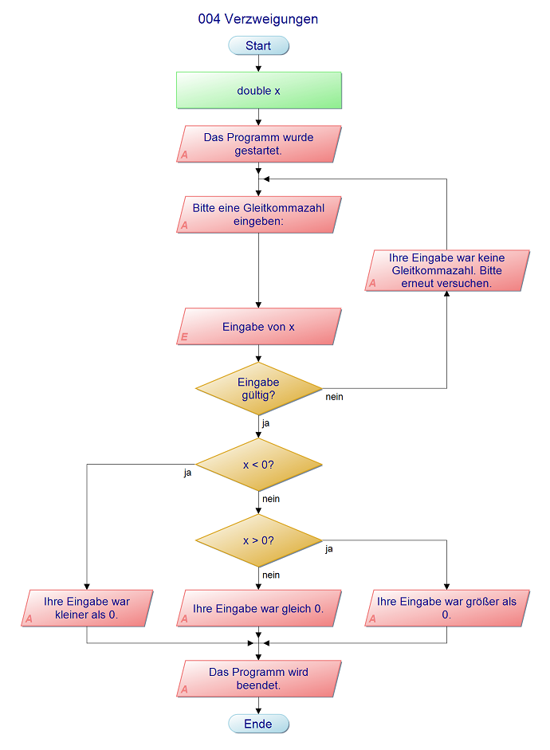

Übersicht Programmablaufplan Template Engine Pug Codebeispiel Pug
In diesem Programm wurde anhand des Vergleichs einer eingegbenen Zahl mit 0 die Verzweigung eines Programmablaufs geübt. Der folgende Programmablaufplan zeigt dessen logische Strukur.
Zu Beginn wird der/die Benutzer:in aufgefordert, eine Zahl eingegeben, die in einer Variable x des Typs double gespeichert werden soll. Zuvor wird geprüft, ob die Eingabe als double interpretiert werden kann. Ist dies nicht der Fall, so wird der oder die Benutzer:in solange aufgefordert, erneut eine Zahl einzugeben, die als double verarbeitet und gespeichert werden kann.
Diese wird schließlich mit 0 verglichen. Ist sie kleiner, wird dies durch eine entsprechende Bildschirmausgabe dem:der Benutzer:in mitgeteilt. Andernfalls wird geprüft, ob die Zahl größer als 0 ist und dies gegebenenfalls dem oder der Benutzer:in mitgeteilt. Sollte auch dies nicht der Fall sein, bedeutet das, dass die Zahl gleich 0 ist und es wird eine entsprechende Nachricht ausgegeben. Mit der Mitteilung, dass das Programm beendet ist, schließt die Ausführung ab.
© 2022 Johannes Knieling